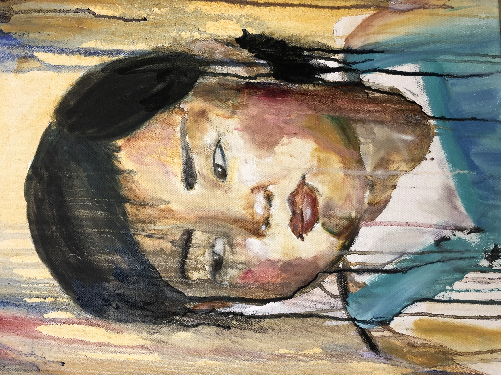

Kasandra Cristine Flores is an artist based in the Bay Area and is studying Studio Practice at San Jose State University with a career aim in Art Education. I am fascinated with the idea of memory. Memories can fade, alter, or be forgotten with age and time. However memory, for many people, can hold a nostalgic and comforting sense; yet in some cases memories are unwanted and daunting to hold. In my work, both paintings and ceramics; I portray this psychological idea of memory through drips. In my methods for painting; the oil paint is watered down with Gamsol mineral spirits and Linseed oil. In ceramics; I make functional pieces, and use the method Mocha Diffusion where pigment is mixed with an acidic element painted onto a fresh glaze. This method gives a drip effect; where the faded pigment represent willingly or unwillingly forgotten and faded memories. While the more prominent pigment; the more prominent the memory. I find it fascinating that a memory cannot exist without an emotion. In recent study, I have been studying ways to add texture on my ceramic pieces by either trimming or glaze methods. Texture also represents time (another form of memory), just like skin over time begins to have a wrinkly texture. Humans are walking memory vessels. We are made up out of time, memory, and nostalgia. In my functional ceramics and paintings. My goal is to remind the viewer that we are only human and to use time wisely because we are fading portraits or vessels. All images copyright to Kasandra Cristine Flores. All rights reserved.
